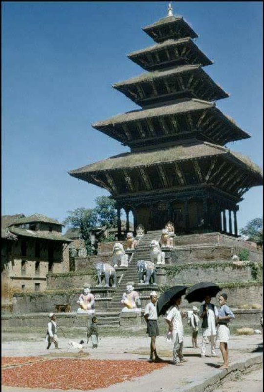

History of Nepal in brief

Records mention the Gopalas and Mahishapalas believed to have been the earliest rulers with their capital at Matatirtha, the south-west corner of the Kathmandu Valley. From the 7th or 8th Century B.C. the Kirantis are said to have ruled the valley. Their famous King Yalumber is even mentioned in the epic, ‘Mahabharat’. Around 300 A.D. the Lichhavis arrived from northern India and overthrew the Kirantis. One of the legacies of the Lichhavis is the Changu Narayan Temple near Bhaktapur, a UNESCO World Heritage Site (Culture), which dates back to the 5th Century. In the early 7th Century, Amshuvarma, the first Thakuri king took over the throne from his father-in-law who was a Lichhavi. He married off his daughter Bhrikuti to the famous Tibetan King Tsong Tsen Gampo thus establishing good relations with Tibet. The Lichhavis brought art and architecture to the valley but the golden age of creativity arrived in 1200 A.D with the Mallas.
During their 550 year rule, the Mallas built numerous temples and splendid palaces with picturesque squares. It was also during their rule that society and the cities became well organized; religious festivals were introduced and literature, music and art were encouraged.
>> View All
More Articles

Pre history and Early History
Nepal’s rich prehistory consists mainly of the legendary traditions of the Newar, the indigenous community of Nepal Valley (now usually called Kathmandu Valley).
>> Read more

Middle period
The middle period in Nepalese history is usually considered coterminous with the rule of the Malla dynasty (10th–18th century) in Nepal Valley and surrounding areas.
>> Read more

jung Bahadur Rana was the first ruler from this dynasty. Rana rulers were titled "Shree Teen"
and "Maharaja", whereas Shah kings were "Shree Panch" and "Maharajadhiraja".
>> Read more

Modern HistoryThe Shah (or Sah) rulers faced tremendous and persistent problems in trying to centralize an area long characterized by extreme diversity and ethnic and regional parochialism
>> Read more